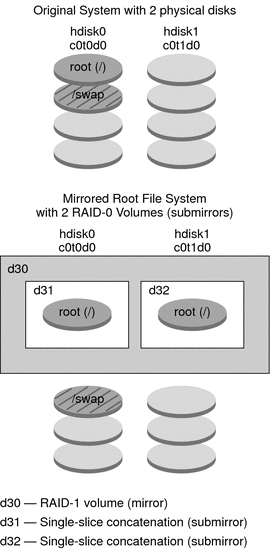

|
|||
|
Part I Overall Planning of Any Solaris Installation or Upgrade 1. Where to Find Solaris Installation Planning Information 2. What's New in Solaris Installation 3. Solaris Installation and Upgrade (Roadmap) 4. System Requirements, Guidelines, and Upgrade (Planning) 5. Gathering Information Before Installation or Upgrade (Planning) Part II Understanding Installations That Relate to GRUB, Solaris Zones, and RAID-1 Volumes 6. x86: GRUB Based Booting for Solaris Installation 7. Upgrading When Solaris Zones Are Installed on a System (Planning) 8. Creating RAID-1 Volumes (Mirrors) During Installation (Overview) Overview of Solaris Volume Manager Components Example of RAID-1 Volume Disk Layout 9. Creating RAID-1 Volumes (Mirrors) During Installation (Planning) |
How Do RAID-1 Volumes Work?Solaris Volume Manager uses virtual disks to manage physical disks and their associated data. In Solaris Volume Manager, a virtual disk is called a volume. A volume is a name for a group of physical slices that appear to the system as a single, logical device. Volumes are actually pseudo, or virtual, devices in standard UNIX® terms. A volume is functionally identical to a physical disk in the view of an application or a file system (such as UFS). Solaris Volume Manager converts I/O requests that are directed at a volume into I/O requests to the underlying member disks. Solaris Volume Manager volumes are built from slices (disk partitions) or from other Solaris Volume Manager volumes. You use volumes to increase performance and data availability. In some instances, volumes can also increase I/O performance. Functionally, volumes behave the same way as slices. Because volumes look like slices, they are transparent to end users, applications, and file systems. Like physical devices, you can use Solaris Volume Manager software to access volumes through block or raw device names. The volume name changes, depending on whether the block or raw device is used. The custom JumpStart installation method and Solaris Live Upgrade support the use of block devices to create mirrored file systems. See RAID Volume Name Requirements and Guidelines for Custom JumpStart and Solaris Live Upgrade for details about volume names. When you create RAID-1 volumes ) with RAID-0 volumes (single-slice concatenations), Solaris Volume Manager duplicates data on the RAID-0 submirrors and treats the submirrors as one volume. Figure 8-1 shows a mirror that duplicates the root (/) file system over two physical disks. Figure 8-1 Creating RAID-1 Volumes on the Root (/) File System on Two DisksFigure 8-1 shows a system with the following configuration.
|
||
|